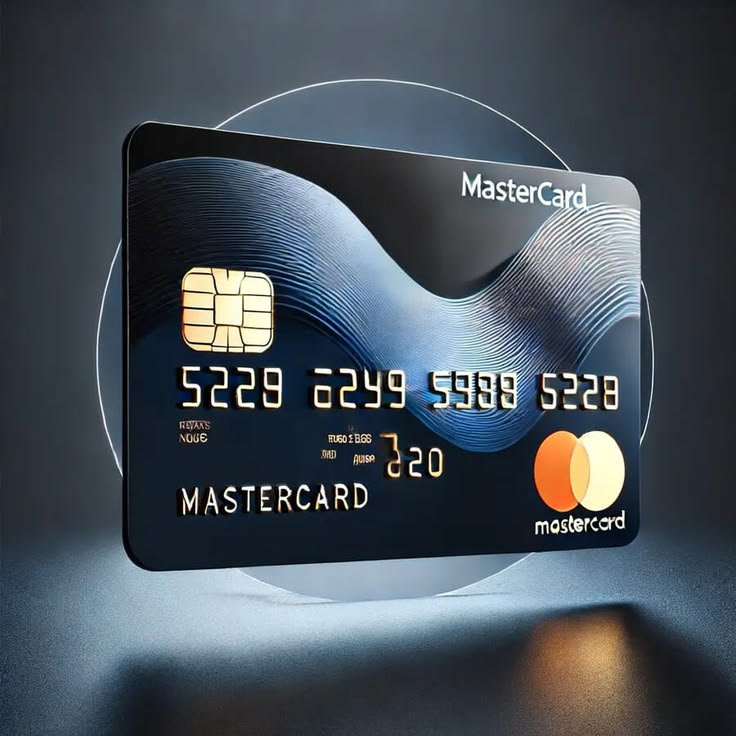

The real guide to Englishs working online

In today's world, online jobs and income from the internet are growing rapidly. Englishs are not left out of that competition. But the biggest challenge is: How to make money online in Englisha?
This is where Payoneer becomes important. This post explains it in detail how to get Payoneer in Englisha, how to use it, and what it can actually do for you.
What is Payoneer?
Payoneer is a global payment service provider People working on the internet to earn money from:
- Freelancing
- Google AdSense
- Amazon & eCommerce
- International companies
Payoneer creates it for you International bank account while in Englisha.
Does Payoneer work in Englisha?
Yes, Pioneer It works fully in Englisha. Although international banks do not operate directly, Payoneer is the solution that most Englishs use today. I am talking to you today, I have a working Payoneer account and it was created in Englisha, so everything I am telling you is correct.
Thousands of Englishs use Payoneer to: AdSense, Upwork, Fiverr, YouTube, and other online jobs.
How to Create a Payoneer Account?
Registration Procedures
- Go to the Payoneer website
- Click “Sign Up”
- Select “Individual”
- Enter your correct name
- Enter email & password
- Choose a country (Englisha)
⚠️ The name you enter must match Your ID (ID or Passport).
What Are the Requirements?
- Gmail working
- Identification (ID / Passport)
- Phone number
- Address (even a simple one is accepted)
Sometimes Payoneer may ask you additional verification, which is normal.
How Payoneer Get Paid?
Once your account is approved, Payoneer provides you with:
- US Bank Account
- EU Bank Account
- UK Bank Account
You can connect to these accounts: Google AdSense, PayPal (some), Upwork, Fiverr, etc.
Payoneer + Google AdSense (Englisha)
This is where many people use Payoneer.
- Log in to Google AdSense
- Go to Payments
- Add a new Bank Account
- Enter Payoneer US bank details
When AdSense sends payment → Payoneer does.
How to get Payoneer money from Englisha?
The most common forms used by Englishs are:
- Payoneer → EVC Plus
- Pioneer → Zaad
- Payoneer → Local bank
- Payoneer → Someone else (exchange)
There are people and companies inside that Payoneer converts to cash or mobile money.
Is Payoneer Card Available in Englisha?
Yes, Payoneer pays MasterCard. But:
- Sometimes shipping can be difficult
- Some people send to an external address
The card allows you to: Withdraw from an ATM or shop online.
Mistakes to Avoid
- Wrong name
- False document
- Multiple accounts
- To use it for illegal purposes
Payoneer is a complex system; if violated, account is closed.
Conclusion
Pioneer is the most feasible solution for Englishs who work online. If you want AdSense, freelancing, or an online business, Payoneer is an indispensable tool.
Anyone who uses Payoneer properly, can have international income while he is in Englisha, that income is coming from anywhere in the world and he is doing work, friend, it is time to improve yourself and your income, today in this world we are in, there is nothing to make excuses for.stand up and get up .